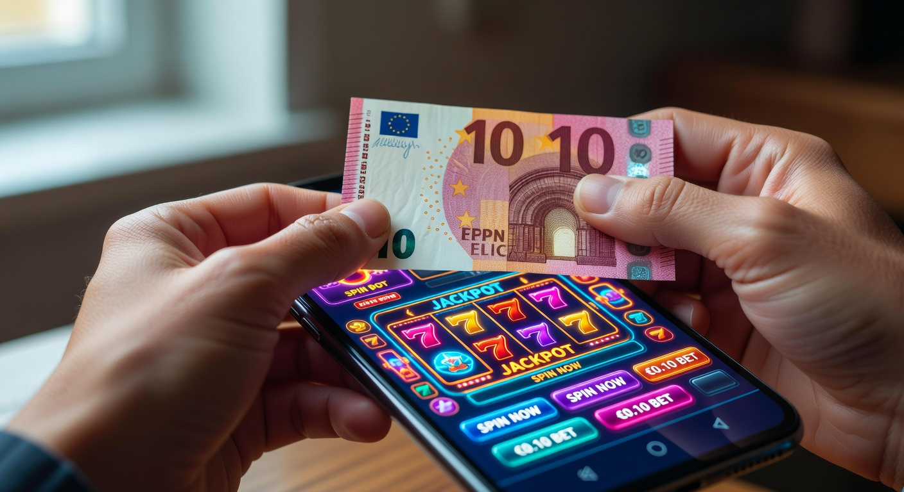
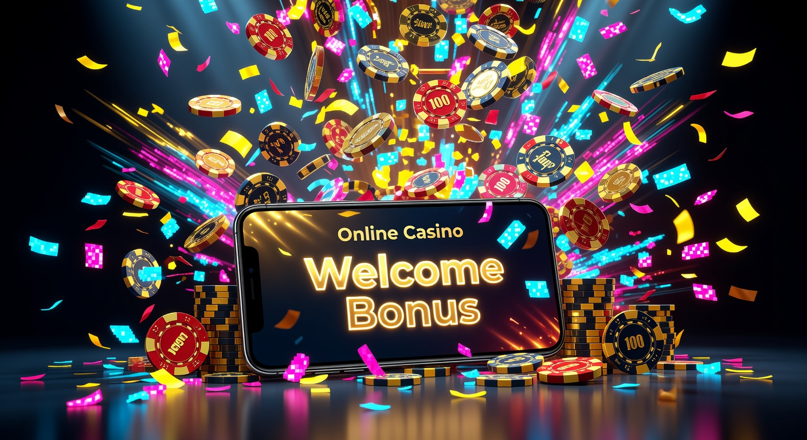
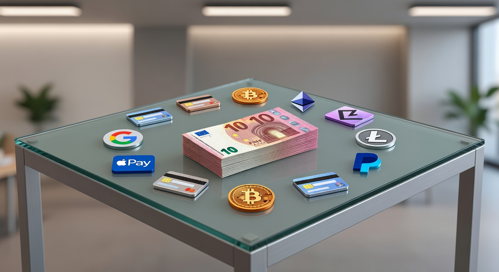
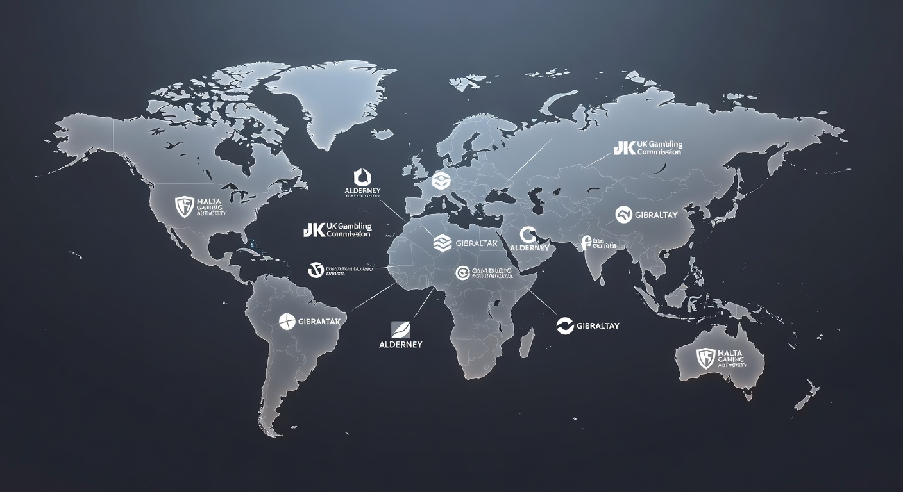

Casinò non AAMS deposito 10 euro: Guida ai Migliori Siti Online del 2026
Il panorama del gioco d'azzardo digitale in Italia ha subito una trasformazione radicale nel corso degli ultimi anni. Arrivati nel 2026, gli utenti cercano sempre più flessibilità, innovazione tecnologica e barriere d'ingresso ridotte. In questo contesto, il concetto di casinò non aams deposito 10 euro è diventato un punto di riferimento fondamentale per chi desidera esplorare le piattaforme internazionali senza dover impegnare capitali ingenti sin dal primo istante. Questi operatori, pur operando al di fuori del circuito della licenza ADM, offrono standard di sicurezza elevatissimi e una varietà di contenuti che spesso supera l'offerta locale.
La crescita esponenziale delle tecnologie blockchain e l'integrazione di sistemi di pagamento istantanei hanno reso i casinò non aams deposito 10 euro estremamente appetibili. Molti giocatori italiani preferiscono queste piattaforme perché permettono di testare la qualità del software, la velocità dei prelievi e la reattività dell'assistenza clienti con un investimento minimo. In questa guida completa aggiornata al 2026, analizzeremo ogni aspetto di questo settore, fornendo gli strumenti necessari per scegliere consapevolmente la piattaforma ideale per le proprie sessioni ludiche.
Esplorare un casinò non aams deposito 10 euro significa avere accesso a un catalogo di migliaia di slot, tavoli dal vivo gestiti da croupier professionisti e promozioni che spesso non trovano riscontro nei siti con licenza italiana. La competitività del mercato globale ha spinto gli operatori esteri a perfezionare i propri servizi, garantendo un'esperienza utente fluida sia da desktop che da dispositivi mobili di ultima generazione. Prima di addentrarci nei dettagli tecnici, è essenziale comprendere come orientarsi in questo vasto mare di proposte.
Se state cercando un'alternativa ancora più economica per iniziare il vostro percorso nel mondo del gambling internazionale, potreste essere interessati a consultare la nostra analisi sui casinò non aams deposito 1 euro, dove approfondiamo le opzioni per chi vuole iniziare con un budget simbolico. Tuttavia, la soglia dei dieci euro rimane quella che sblocca il maggior numero di bonus di benvenuto e vantaggi competitivi nel 2026.
Classifica dei migliori casinò con ricarica minima da 10€
La selezione dei migliori operatori per il 2026 è stata effettuata basandosi su criteri rigorosi di affidabilità, velocità dei pagamenti e varietà dell'offerta. Di seguito presentiamo le piattaforme che si distinguono per l'eccellenza nei servizi offerti a chi sceglie un casinò non aams deposito 10 euro per le proprie giocate.
| Brand | Caratteristica Principale | Bonus Offerto | Link Sicuro |
|---|---|---|---|
| Millioner | Interfaccia Next-Gen | 100% fino a 500€ + 100 FS | Visita Millioner |
| Roulettino | Miglior Casinò Live | Bonus Ricarica del 200% | Visita Roulettino |
| Wyns | Scommesse e Slot 2-in-1 | Pacchetto Benvenuto 1000€ | Visita Wyns |
| Kinbet | Supporto Crypto Totale | Cashback settimanale 15% | Visita Kinbet |
| Dragonia | Gamification Avanzata | Bonus senza deposito 20€ | Visita Dragonia |
| Divaspin | Slot Esclusive 2026 | 500 Giri Gratis | Visita Divaspin |
Ogni operatore presente in questa tabella è stato testato dal nostro team di esperti IT per garantire che la transazione avvenga in modo sicuro e immediato. Scegliere un casinò non aams deposito 10 euro da questa lista significa affidarsi a società consolidate che operano con licenze internazionali rispettate a livello globale, come quelle rilasciate dalle autorità di Curacao o della Malta Gaming Authority.
Cosa si intende per siti di gioco senza licenza ADM?
Quando parliamo di un casinò non aams deposito 10 euro, ci riferiamo a piattaforme che non possiedono la licenza emessa dall'Agenzia delle Dogane e dei Monopoli (ex AAMS). Questo non significa che siano siti illegali o pericolosi; al contrario, la maggior parte di essi possiede licenze internazionali che permettono di operare legalmente in molti paesi del mondo. Nel 2026, la distinzione tra siti ADM e non AAMS è diventata puramente burocratica, poiché i protocolli di sicurezza crittografica sono ormai standardizzati a livello industriale.
I siti senza licenza italiana offrono spesso una libertà maggiore. Ad esempio, non sono soggetti alle restrizioni stringenti sulle puntate massime o sui limiti di tempo per sessione imposti dal regolatore italiano. Un casinò non aams deposito 10 euro può quindi offrire RTP (Return to Player) più competitivi e jackpot più elevati, grazie a una tassazione più agevolata nei paesi di residenza fiscale del gestore. Per molti professionisti del settore IT, queste piattaforme rappresentano l'avanguardia dello sviluppo software applicato al gambling.
È importante notare che, sebbene la licenza AAMS offra una tutela diretta da parte dello stato italiano, le licenze estere come quella di Curacao proteggono l'utente attraverso organismi di controllo indipendenti. Nel 2026, la trasparenza è garantita dall'uso di algoritmi RNG (Random Number Generator) certificati da laboratori come eCOGRA o iTech Labs, i quali assicurano che ogni partita in un casinò non aams deposito 10 euro sia equa e non manipolabile.
Vantaggi di giocare nei casinò non AAMS con deposito 10 euro

Il successo di ogni casinò non aams deposito 10 euro risiede nella capacità di offrire un valore aggiunto che le piattaforme tradizionali faticano a eguagliare. Uno dei vantaggi principali è l'assenza della procedura di autoesclusione trasversale presente in Italia, che permette ai giocatori che hanno risolto i propri problemi di gioco di tornare a divertirsi responsabilmente senza lungaggini burocratiche. Inoltre, la velocità di registrazione è spesso superiore, consentendo di iniziare a giocare in pochi istanti.
Un altro aspetto fondamentale riguarda l'entità dei bonus. In un casinò non aams deposito 10 euro, è comune trovare pacchetti di benvenuto che raddoppiano o triplicano il valore del versamento iniziale, aggiungendo anche giri gratuiti sulle slot più popolari del momento. Nel 2026, la competizione è così serrata che i termini e le condizioni (wagering) sono diventati molto più favorevoli per l'utente finale, rendendo reale la possibilità di convertire i bonus in saldo prelevabile.
Infine, la varietà dei titoli disponibili è impressionante. Collaborando con fornitori globali, un casinò non aams deposito 10 euro può ospitare migliaia di giochi diversi, dalle slot 3D con grafiche cinematografiche ai tavoli di blackjack con tecnologia VR (Realtà Virtuale). Questa ampiezza di scelta garantisce che ogni tipologia di giocatore possa trovare l'ambiente ideale per le proprie preferenze estetiche e funzionali.
Accessibilità per piccoli budget
La soglia dei dieci euro è considerata il "golden point" per l'accessibilità finanziaria. Permette a chiunque, indipendentemente dalla propria situazione economica, di accedere al brivido del gioco reale senza correre rischi eccessivi. In un casinò non aams deposito 10 euro, questa cifra è sufficiente per generare centinaia di giri su slot machine con puntata minima di 0,01€, estendendo considerevolmente la durata della sessione ludica e le probabilità di colpire una combinazione vincente.
Nel 2026, le piattaforme hanno ottimizzato i costi di transazione, rendendo possibile accettare ricariche contenute senza applicare commissioni penalizzanti. Questo significa che i vostri 10 euro arrivano integralmente sul conto ludico, pronti per essere utilizzati. L'accessibilità non riguarda solo il portafoglio, ma anche la facilità d'uso delle app mobili, che permettono di gestire il budget in modo granulare e veloce mentre si è in movimento.
Promozioni e bonus più generosi
Le strutture promozionali nei siti esteri sono rinomate per la loro audacia. Un casinò non aams deposito 10 euro spesso propone un bonus del 200% o 300% sul primo caricamento. Questo significa che con soli 10 euro potrete iniziare a giocare con un saldo di 30 o 40 euro. Nel 2026, abbiamo assistito all'introduzione di bonus "sticky" e "non-sticky" molto più trasparenti, che permettono di prelevare le vincite derivanti dal saldo reale in qualsiasi momento, migliorando drasticamente l'esperienza dell'utente.
Inoltre, la fedeltà viene premiata regolarmente. Oltre al bonus iniziale, ogni casinò non aams deposito 10 euro degno di nota offre programmi VIP accessibili sin dal primo giorno. Accumulando punti per ogni puntata effettuata, è possibile scalare i livelli e sbloccare premi settimanali, cashback sulla perdita netta e persino regali fisici inviati direttamente a casa. La generosità non è solo una strategia di marketing, ma un pilastro della fidelizzazione nel mercato globale del 2026.
Bonus e promozioni attivabili con 10 Euro

Entrando nel dettaglio tecnico, vediamo quali tipologie di incentivi è possibile sbloccare versando questa cifra. Il casinò non aams deposito 10 euro moderno ha strutturato le proprie offerte per essere modulari. Anche se non si effettua un versamento da "high roller", si ha diritto a una serie di vantaggi che aumentano il valore atteso della giocata. Le promozioni sono lo strumento principale con cui questi siti competono per attirare l'attenzione dei nuovi utenti.
È fondamentale leggere sempre i termini e le condizioni associati a ogni offerta. Nel 2026, la maggior parte dei casinò non aams deposito 10 euro ha semplificato i documenti legali, rendendo chiari i requisiti di puntata. Un requisito di 30x o 35x è considerato onesto nel mercato attuale. Ricordate che non tutti i giochi contribuiscono allo stesso modo al raggiungimento del volume di scommessa richiesto: le slot solitamente contribuiscono al 100%, mentre i giochi da tavolo potrebbero avere una percentuale inferiore.
Bonus di benvenuto sul primo versamento
Il bonus di benvenuto è il biglietto da visita di ogni piattaforma. In un casinò non aams deposito 10 euro, questa offerta consiste solitamente in una percentuale di credito extra calcolata sul totale della ricarica. Ad esempio, piattaforme rinomate come 22bet o Betlabel hanno storicamente offerto match bonus molto interessanti anche per versamenti minimi. Nel 2026, questi bonus sono spesso accompagnati da "assicurazioni" sulla prima giocata, offrendo un rimborso parziale in caso di perdita immediata.
Per attivare queste offerte, a volte è necessario inserire un codice promozionale durante la fase di ricarica. Nel casinò non aams deposito 10 euro scelto, la procedura è automatizzata: non appena il sistema rileva il versamento, il saldo bonus viene accreditato istantaneamente. Questo permette di raddoppiare immediatamente il proprio potere di acquisto e provare titoli che magari, con un saldo limitato, non si avrebbe il coraggio di testare.
Giri gratis (Free Spins) su slot selezionate
I giri gratis rappresentano una delle promozioni più amate dal pubblico italiano. Molti operatori di casinò non aams deposito 10 euro includono nel pacchetto di benvenuto da 50 a 200 giri gratis su slot machine di successo prodotte da colossi come NetEnt o Microgaming. Questa è un'ottima opportunità per vincere denaro reale senza rischiare ulteriormente il proprio capitale iniziale. Le vincite ottenute dai giri gratis vengono solitamente accreditate come saldo bonus soggetto a requisiti di puntata.
Nel 2026, la tendenza è quella di offrire giri gratis "senza requisiti" (wager-free) su determinati titoli in promozione. Se trovate un casinò non aams deposito 10 euro che offre questa opzione, vi trovate di fronte a un'offerta di altissimo valore. Poter prelevare immediatamente ciò che si vince durante i free spins è il massimo della convenienza. Slot popolari come Starburst o Book of Dead sono spesso le protagoniste di queste iniziative, garantendo divertimento e qualità tecnica eccelsa.
Bonus senza deposito come alternativa
Sebbene il focus di questa guida sia il versamento minimo, è impossibile non menzionare i bonus senza deposito. Alcuni casinò non aams deposito 10 euro offrono una piccola somma di denaro o giri gratis semplicemente per aver completato la registrazione e verificato l'identità (KYC). Questo bonus serve come "assaggio" della piattaforma. Tuttavia, le vincite ottenibili sono solitamente limitate da un tetto massimo di prelievo (cap), che nel 2026 si aggira mediamente intorno ai 50-100 euro.
Utilizzare un bonus senza deposito prima di procedere con il versamento dei 10 euro è una strategia intelligente. Permette di valutare la fluidità del software su dispositivi mobili e la varietà della lobby senza alcun impegno economico. Brand emergenti come Dragonia utilizzano spesso questa tattica per farsi conoscere nel competitivo mercato italiano del 2026, offrendo incentivi generosi a chi decide di creare un nuovo account.
Metodi di pagamento per depositi da 10€ nei siti stranieri

La gestione finanziaria è un aspetto cruciale. Un casinò non aams deposito 10 euro deve offrire opzioni di transazione che siano non solo sicure, ma anche veloci e prive di costi nascosti. Nel 2026, la tecnologia dei pagamenti ha fatto passi da gigante, introducendo soluzioni che garantiscono l'anonimato e la protezione dei dati sensibili degli utenti. La flessibilità nei sistemi accettati è uno dei parametri che utilizziamo per valutare l'affidabilità di un operatore internazionale.
Oltre alle classiche carte di credito e debito, i giocatori hanno oggi a disposizione una vasta gamma di portafogli elettronici e soluzioni basate su criptovalute. La scelta del metodo influisce anche sui tempi di prelievo: mentre i bonifici bancari possono richiedere ancora qualche giorno, i prelievi verso e-wallet in un casinò non aams deposito 10 euro d'eccellenza avvengono spesso in tempo reale o entro poche ore dalla richiesta.
Criptovalute: Bitcoin e Altcoin
L'integrazione delle criptovalute è la vera rivoluzione del 2026 nel settore del gambling. Ogni moderno casinò non aams deposito 10 euro accetta ormai Bitcoin, Ethereum, Litecoin e spesso anche stablecoin come USDT. L'uso delle crypto permette di aggirare i limiti imposti dagli istituti bancari tradizionali e garantisce transazioni istantanee con commissioni di rete quasi nulle, specialmente su network di secondo livello o sidechain.
Giocare con criptovalute in un casinò non aams deposito 10 euro offre anche un livello di privacy superiore. Non è necessario condividere i dettagli del proprio conto bancario o della carta di credito con l'operatore. Inoltre, molti siti offrono bonus speciali dedicati esclusivamente a chi deposita in cripto, con percentuali di ricarica che possono superare il 300%. Per gli appassionati di tecnologia IT, questa è senza dubbio l'opzione più efficiente e sicura.
Portafogli elettronici e carte prepagate
Gli e-wallet rimangono il metodo preferito da una vasta fetta di utenza per la loro semplicità d'uso. In un casinò non aams deposito 10 euro, troverete quasi sempre supporto per Skrill e Neteller. Questi servizi fungono da ponte tra la vostra banca e il sito di gioco, aggiungendo uno strato di sicurezza. Nel 2026, questi portafogli sono diventati estremamente intuitivi, con app mobili che permettono di autorizzare i pagamenti tramite biometria (impronta digitale o riconoscimento facciale).
Le carte prepagate, come la classica Postepay in Italia o le soluzioni internazionali, sono altrettanto popolari. Consentono di gestire un budget separato dal conto principale, ideale per chi vuole mantenere un controllo rigoroso sulle proprie spese ludiche. In ogni casinò non aams deposito 10 euro, il versamento tramite prepagata è istantaneo e permette di iniziare a giocare immediatamente dopo aver confermato l'operazione tramite il protocollo 3D Secure.
Utilizzo di Paysafecard e Revolut
Paysafecard rappresenta la soluzione ideale per chi desidera depositare contanti trasformandoli in credito digitale. Acquistando un voucher presso un punto vendita fisico, è possibile caricare il proprio conto in un casinò non aams deposito 10 euro inserendo semplicemente un codice PIN di 16 cifre. È un metodo che garantisce il massimo controllo della spesa, poiché non è possibile depositare più di quanto acquistato nel voucher.
Dall'altro lato, Revolut è diventata la banca digitale di riferimento per i giocatori internazionali nel 2026. Grazie alla possibilità di creare carte virtuali usa e getta, Revolut offre una sicurezza impareggiabile per le transazioni online. Molti utenti scelgono un casinò non aams deposito 10 euro proprio per la compatibilità con le funzioni di gestione finanziaria avanzate di Revolut, che permettono di categorizzare le spese e impostare limiti mensili di gioco in modo automatico.
Sicurezza e affidabilità delle licenze internazionali

Una preoccupazione comune tra i nuovi giocatori riguarda la sicurezza di un casinò non aams deposito 10 euro. È fondamentale sfatare il mito che "senza licenza AAMS" significhi "senza regole". Al contrario, per poter operare a livello globale e collaborare con i principali fornitori di software e sistemi di pagamento, questi siti devono sottostare a normative internazionali molto rigide. Nel 2026, la reputazione online di un brand è il suo asset più prezioso, e nessun operatore serio rischierebbe di perderla con pratiche scorrette.
La sicurezza si manifesta attraverso diversi livelli: la crittografia dei dati (SSL a 256 bit), la protezione dei fondi dei giocatori (che devono essere conservati in conti separati da quelli della società) e l'equità dei giochi. Un casinò non aams deposito 10 euro affidabile espone chiaramente i loghi delle autorità di licenza e i certificati di revisione dei propri sistemi RNG. Verificare questi elementi nel footer del sito è il primo passo per una scelta serena.
Licenza di Curacao (eGaming)
La licenza di Curacao è una delle più diffuse al mondo per quanto riguarda il gioco online internazionale. Nel 2026, Curacao ha aggiornato i suoi protocolli di controllo, diventando un ente regolatore molto più stringente rispetto al passato. Molti dei migliori casinò non aams deposito 10 euro operano sotto questa giurisdizione perché permette una maggiore flessibilità nell'accettazione delle criptovalute e nell'offerta di bonus creativi che le licenze europee a volte limitano.
Scegliere un operatore con licenza di Curacao significa avere la certezza che la società alle spalle sia stata sottoposta a controlli finanziari e di onorabilità. Inoltre, Curacao funge da mediatore in caso di controversie tra giocatore e casinò, fornendo un canale ufficiale per la risoluzione dei problemi. Per un casinò non aams deposito 10 euro, possedere questa licenza è un segnale chiaro di impegno verso la legalità internazionale.
Malta Gaming Authority (MGA)
La Malta Gaming Authority è considerata da molti come il gold standard delle licenze europee. Un casinò non aams deposito 10 euro con licenza MGA deve rispettare normative severissime in materia di protezione dei dati (GDPR), prevenzione del riciclaggio di denaro e gioco responsabile. Malta offre una tutela del consumatore molto elevata, spesso comparabile o superiore a quella italiana per quanto riguarda la trasparenza dei termini contrattuali.
Sebbene i siti MGA abbiano talvolta restrizioni leggermente superiori rispetto a quelli di Curacao (ad esempio, sono meno aperti alle criptovalute pure), rappresentano la scelta ideale per chi cerca la massima sicurezza istituzionale in ambito europeo. Nel 2026, navigare su un casinò non aams deposito 10 euro maltese garantisce un'esperienza di gioco fluida, con la consapevolezza che ogni puntata è monitorata da uno dei regolatori più esperti al mondo.
Come scegliere il miglior casinò estero per le tue esigenze
Non esiste un "miglior casinò" assoluto, ma esiste quello più adatto alle esigenze specifiche di ogni utente. Per valutare un casinò non aams deposito 10 euro, è necessario analizzare diversi fattori soggettivi e oggettivi. Innanzitutto, controllate se la libreria dei giochi include i vostri titoli preferiti o i fornitori che stimate di più. Un catalogo vasto è inutile se non contiene i contenuti che vi appassionano.
In secondo luogo, testate l'interfaccia utente. Nel 2026, la velocità di caricamento delle pagine e la facilità di navigazione sono essenziali. Un buon casinò non aams deposito 10 euro dovrebbe permettervi di trovare il vostro gioco preferito in meno di tre clic. Infine, non sottovalutate l'importanza dell'assistenza clienti: la presenza di una chat dal vivo disponibile 24/7, preferibilmente in lingua italiana, è un valore aggiunto imprescindibile per risolvere rapidamente eventuali dubbi tecnici o amministrativi.
Un altro criterio di scelta fondamentale è la politica dei prelievi. Leggete attentamente quali sono i limiti minimi per incassare le vincite in un casinò non aams deposito 10 euro. Alcuni siti permettono di prelevare già a partire da 10 o 20 euro, mentre altri richiedono soglie più alte. Nel 2026, l'onestà e la velocità nel pagare i giocatori sono i fattori che determinano il successo a lungo termine di una piattaforma internazionale.
Giochi disponibili con un budget ridotto
Molti pensano che con soli dieci euro le opzioni di divertimento siano limitate. Niente di più falso. In un casinò non aams deposito 10 euro del 2026, le possibilità sono virtualmente infinite grazie alla flessibilità delle puntate minime. Molte slot moderne permettono di giocare con appena 10 centesimi per spin, il che significa avere a disposizione almeno 100 tentativi di vincita. Questo budget è più che sufficiente per innescare funzioni bonus, giri gratuiti interni ai giochi e moltiplicatori elevati.
Oltre alle slot, anche i classici giochi da tavolo si sono adattati. Esistono versioni di roulette e blackjack "micro" dove la puntata minima è di 0,50€ o 1€. Questo permette di applicare strategie di gioco anche con un capitale iniziale contenuto. Un casinò non aams deposito 10 euro ben fornito offre anche i cosiddetti "instant games" o "crash games" come Aviator, che sono perfetti per sessioni veloci e potenzialmente molto redditizie anche partendo da piccole somme.
Slot machine con puntata minima bassa
Le slot machine sono il cuore pulsante di ogni casinò non aams deposito 10 euro. Nel 2026, gli sviluppatori come NetEnt, Pragmatic Play e Microgaming hanno ottimizzato i loro motori di gioco per supportare scommesse molto contenute senza sacrificare la qualità grafica o il potenziale di vincita. Slot con meccaniche Megaways o a cluster pay offrono migliaia di modi per vincere anche con una puntata minima di 0,10€ o 0,20€.
Giocare alle slot in un casinò non aams deposito 10 euro permette di esplorare temi che vanno dall'antico Egitto alla fantascienza cyberpunk. Grazie all'uso di tecnologie come HTML5, questi giochi sono perfettamente ottimizzati per qualsiasi smartphone, garantendo animazioni fluide e tempi di caricamento istantanei. Ricordate di controllare sempre l'RTP del singolo gioco: puntare su titoli con un ritorno al giocatore superiore al 96% è una scelta saggia per far durare più a lungo i vostri 10 euro.
Tavoli live e game shows
Il casinò dal vivo è l'esperienza più immersiva che si possa provare online. In un casinò non aams deposito 10 euro, potrete collegarvi a studi televisivi professionali dove croupier reali gestiscono tavoli di Roulette, Blackjack, Baccarat e molto altro. La tecnologia di streaming in 4K del 2026 rende l'atmosfera identica a quella di un casinò terrestre di lusso. Molti tavoli live accettano puntate a partire da 0,50€, rendendo l'esperienza accessibile a tutti.
I Game Shows, come Crazy Time o Monopoly Live, sono diventati un fenomeno di massa. Combinano elementi di giochi da tavolo, ruote della fortuna e realtà aumentata. In un casinò non aams deposito 10 euro, partecipare a questi show è un modo divertente per interagire con altri giocatori e con i presentatori, con la possibilità di colpire moltiplicatori astronomici che possono trasformare un piccolo deposito in una vincita significativa in un singolo round.
Procedure di registrazione e verifica (KYC)
Iniziare l'avventura in un casinò non aams deposito 10 euro è un processo semplice e veloce nel 2026. La maggior parte degli operatori ha implementato la registrazione "one-click" o tramite social media e portafogli digitali. In pochi secondi, avrete il vostro numero di conto e sarete pronti per la ricarica. Tuttavia, la sicurezza impone che, prima del primo prelievo di una certa entità, venga effettuata la verifica dell'identità (Know Your Customer).
Questa procedura consiste nel caricare una foto di un documento d'identità valido e, a volte, una prova di residenza (come una bolletta recente). Nel 2026, i migliori casinò non aams deposito 10 euro utilizzano sistemi di intelligenza artificiale per verificare i documenti in pochi minuti, eliminando le lunghe attese del passato. Completare tempestivamente il KYC è fondamentale per garantire che i vostri fondi siano protetti e che i prelievi avvengano senza intoppi burocratici.
È importante sottolineare che i dati personali inviati a un casinò non aams deposito 10 euro sono protetti da rigidi protocolli di privacy. Queste piattaforme investono milioni in cybersecurity per prevenire accessi non autorizzati. Come esperti IT, consigliamo sempre di utilizzare una password complessa e, dove disponibile, di attivare l'autenticazione a due fattori (2FA) per aggiungere un ulteriore livello di protezione al vostro account di gioco.
Considerazioni finali sul gioco responsabile
Nonostante l'attrattiva di un casinò non aams deposito 10 euro, è vitale ricordare che il gioco deve rimanere una forma di intrattenimento e mai una fonte di stress o di reddito primario. Nel 2026, la responsabilità sociale è al centro delle politiche di ogni operatore serio. Anche se queste piattaforme non sono collegate al registro di autoesclusione ADM, esse offrono strumenti interni molto efficaci per il controllo del comportamento di gioco.
Ogni utente può impostare limiti di deposito giornalieri, settimanali o mensili direttamente dal proprio pannello di controllo. Se sentite che il gioco sta prendendo il sopravvento, ogni casinò non aams deposito 10 euro affidabile permette di richiedere un periodo di pausa o l'autoesclusione permanente dal sito. La trasparenza su queste opzioni è un segno distintivo di un operatore che ha a cuore il benessere dei propri clienti. Giocate sempre con la testa, non con il desiderio di recuperare le perdite.
Per ulteriori informazioni sul supporto e sulla prevenzione delle problematiche legate al gioco, potete consultare organizzazioni internazionali come BeGambleAware, che offrono risorse gratuite e confidenziali. Ricordate che un casinò non aams deposito 10 euro deve essere un luogo di divertimento digitale, dove l'innovazione tecnologica e la fortuna si incontrano per regalarvi momenti di svago in totale sicurezza nel panorama del 2026.
Approfondimento sui Software Provider nel 2026
La qualità di un casinò non aams deposito 10 euro dipende in larga misura dai partner software con cui collabora. Nel 2026, il mercato è dominato da aziende che hanno saputo integrare l'intelligenza artificiale per personalizzare l'esperienza di gioco. Fornitori come NetEnt continuano a stupire con slot graficamente eccelse, mentre Microgaming (ora parte di un gruppo ancora più vasto) detiene il primato per i jackpot progressivi che possono cambiare la vita con un singolo spin da pochi centesimi.
Oltre ai giganti, molti siti di casinò non aams deposito 10 euro ospitano software di studi indipendenti emergenti che puntano tutto sull'innovazione delle meccaniche. Questi piccoli provider spesso creano giochi con volatilità estrema, ideali per chi cerca il colpo grosso anche con un budget ridotto. La varietà tecnologica garantisce che il catalogo sia sempre aggiornato con nuove uscite settimanali, mantenendo l'esperienza utente fresca e stimolante.
Un aspetto tecnico rilevante nel 2026 è la "provable fairness", spesso utilizzata nei giochi basati su blockchain. In un casinò non aams deposito 10 euro che supporta questa tecnologia, il giocatore può verificare autonomamente l'integrità di ogni round di gioco tramite crittografia. Questo livello di trasparenza era impensabile solo pochi anni fa e rappresenta il futuro dell'onestà nel gambling digitale globale.
Mobile Gaming: L'esperienza su Smartphone nel 2026
Statistiche recenti mostrano che oltre l'85% delle sessioni in un casinò non aams deposito 10 euro avviene tramite dispositivo mobile. Nel 2026, non si parla più solo di siti "mobile-friendly", ma di approccio "mobile-first". Le interfacce sono progettate per essere utilizzate agevolmente con una sola mano, con pulsanti ampi e menu a scorrimento intuitivi. Che usiate un iPhone di ultima generazione o un dispositivo Android di fascia media, l'esperienza sarà identica a quella del desktop.
Le applicazioni native di molti casinò non aams deposito 10 euro offrono vantaggi aggiuntivi, come notifiche push per bonus esclusivi e un caricamento ancora più rapido dei giochi. Grazie alla diffusione globale del 5G e delle prime reti 6G sperimentali nel 2026, i ritardi di connessione sono un ricordo del passato. Giocare al casinò dal vivo mentre si aspetta l'autobus o durante una pausa caffè è diventato fluido e privo di interruzioni tecniche.
La sicurezza mobile è altrettanto avanzata. L'integrazione di sistemi come Apple Pay e Google Pay all'interno di un casinò non aams deposito 10 euro permette di ricaricare il conto in un istante senza dover inserire manualmente i dati della carta ogni volta. Questo non solo aumenta la comodità, ma riduce drasticamente i rischi legati al phishing e al furto di credenziali online.
Aspetti Fiscali e Giuridici nel 2026
Un tema spesso dibattuto riguarda la tassazione delle vincite ottenute in un casinò non aams deposito 10 euro. In Italia, le vincite nei siti ADM sono tassate alla fonte, mentre per i siti esteri la situazione è differente. Nel 2026, la normativa europea ha fatto passi avanti verso un'armonizzazione, ma è sempre bene consultare un esperto contabile per la propria dichiarazione dei redditi. In generale, le vincite ottenute in casinò con licenza di un paese UE sono spesso esenti da ulteriori tassazioni grazie al principio di libera prestazione dei servizi.
Per quanto riguarda i siti extra-UE, come quelli con licenza di Curacao, le vincite andrebbero tecnicamente dichiarate tra i "redditi diversi". Tuttavia, l'uso delle criptovalute in un casinò non aams deposito 10 euro ha creato nuove sfide per i legislatori, portando a una zona grigia che molti giocatori navigano con attenzione. La cosa fondamentale è giocare sempre in piattaforme che operano legalmente nelle loro giurisdizioni per evitare complicazioni legali o finanziarie a lungo termine.
Ricordate che la responsabilità della dichiarazione spetta sempre al contribuente. Un casinò non aams deposito 10 euro non invierà mai segnalazioni automatiche al fisco italiano, garantendo la vostra privacy finanziaria, ma è vostro dovere agire nel rispetto delle leggi vigenti nel 2026 per quanto riguarda la trasparenza dei capitali detenuti all'estero.
L'Importanza dell'Assistenza Clienti
Un casinò non aams deposito 10 euro di qualità si riconosce dalla velocità con cui risponde alle domande dei propri utenti. Nel 2026, l'assistenza è diventata ibrida: chatbot avanzati basati su modelli linguistici di ultima generazione risolvono i problemi più comuni istantaneamente, mentre operatori umani esperti intervengono per le questioni più complesse. La disponibilità 24 ore su 24 è ormai lo standard minimo accettabile.
Prima di effettuare il vostro primo versamento in un casinò non aams deposito 10 euro, vi consigliamo di fare un test: inviate una domanda semplice in chat dal vivo. Valutate il tempo di risposta e la cortesia dell'operatore. Un sito che investe nel supporto è un sito che tiene ai propri giocatori e che non sparirà in caso di problemi tecnici. La presenza di una sezione FAQ (Domande Frequenti) dettagliata è un altro ottimo indicatore di professionalità.
Molte piattaforme internazionali offrono assistenza anche tramite canali social o app di messaggistica come Telegram e WhatsApp. Questo livello di vicinanza all'utente è tipico del casinò non aams deposito 10 euro moderno, che mira a costruire una comunità di giocatori fedeli e soddisfatti attraverso una comunicazione aperta e trasparente.
Analisi Dettagliata dei Brand Consigliati
Approfondiamo ora le caratteristiche dei brand che abbiamo selezionato per voi. Millioner si distingue nel 2026 per la sua estetica minimalista e la velocità di esecuzione dei giochi, ideale per chi non ama le distrazioni. Al contrario, Roulettino punta tutto sull'atmosfera del casinò dal vivo, offrendo tavoli esclusivi che non troverete su altre piattaforme internazionali. Scegliere un casinò non aams deposito 10 euro tra questi due dipende dal vostro stile di gioco.
Wyns e Kinbet sono i giganti della versatilità. Se oltre alle slot amate scommettere sullo sport, questi operatori offrono conti di gioco unificati che permettono di passare da una partita di blackjack a una scommessa sulla Champions League con un solo tocco. In un casinò non aams deposito 10 euro come questi, il divertimento non finisce mai grazie a un palinsesto di eventi sportivi globali integrato direttamente nella lobby.
Infine, Dragonia e Divaspin rappresentano l'anima creativa del settore. Con sistemi di gamification che ricordano i videogiochi di ruolo, ogni puntata vi fa guadagnare esperienza e sbloccare nuovi mondi o bonus segreti. Questi sono i casinò non aams deposito 10 euro preferiti dalle nuove generazioni di giocatori che cercano un'esperienza interattiva che vada oltre il semplice girare i rulli di una slot.
Come Gestire il Budget di 10 Euro
Gestire un budget ridotto richiede strategia. Il primo consiglio è quello di non puntare tutto su un singolo evento. Dividete i vostri dieci euro in piccole porzioni. In un casinò non aams deposito 10 euro, questo significa fare puntate da 10 o 20 centesimi. Questa strategia aumenta la vostra "volatilità personale" e vi dà più tempo per colpire una serie fortunata o attivare una funzione speciale del gioco.
Utilizzate i bonus a vostro vantaggio. Se il casinò non aams deposito 10 euro vi offre un bonus del 100%, avrete 20 euro totali. Usate il saldo bonus per testare slot nuove e ad alta volatilità, conservando il saldo reale per giochi più equilibrati con RTP alto. La gestione del bankroll è la differenza tra una sessione di gioco che finisce in pochi minuti e una serata intera di divertimento e possibili vincite.
Non sottovalutate mai il potere del cashback. Molti siti internazionali offrono un rimborso settimanale sulle perdite. Anche se iniziate con poco, un casinò non aams deposito 10 euro che vi restituisce il 10% o il 15% di ciò che non avete vinto vi permette di avere una "seconda chance" senza dover effettuare un nuovo deposito. È una rete di sicurezza che ogni giocatore intelligente dovrebbe sfruttare nel 2026.
Confronto tra Casinò AAMS e Non AAMS
Perché scegliere un casinò non aams deposito 10 euro invece di uno con licenza ADM? La risposta risiede principalmente nella libertà. I siti italiani hanno limiti di deposito e di scommessa molto rigidi, imposti per legge. Se da un lato questo protegge i giocatori più vulnerabili, dall'altro limita l'esperienza per chi vuole gestire il proprio denaro in autonomia. Le piattaforme internazionali offrono limiti molto più alti, rendendole adatte sia ai piccoli risparmiatori che ai grandi scommettitori.
Un altro punto a favore del casinò non aams deposito 10 euro è la velocità burocratica. Non è necessario attendere la validazione del codice fiscale o affrontare procedure di registrazione lunghe e tediose. Nel 2026, la semplicità è un valore fondamentale. Inoltre, la varietà dei giochi nei siti internazionali è mediamente il triplo rispetto a quelli italiani, poiché possono ospitare software provider che non hanno ancora completato l'iter di certificazione in Italia.
D'altra parte, il sito ADM offre una tutela legale diretta dello stato italiano. Tuttavia, come abbiamo visto, i casinò non aams deposito 10 euro con licenza MGA o Curacao offrono standard di sicurezza equivalenti a livello tecnologico. La scelta finale spetta al giocatore, che deve bilanciare il desiderio di libertà e bonus più alti con la preferenza per un ambiente regolato localmente.
Innovazioni Tecnologiche Previste per la Fine del 2026
Guardando al futuro prossimo, il settore del gambling continuerà a evolversi. Ci aspettiamo che ogni casinò non aams deposito 10 euro integri sempre più la Realtà Aumentata (AR) per permettere ai giocatori di visualizzare i tavoli da gioco direttamente nel proprio salotto tramite visori o smartphone. La personalizzazione tramite IA diventerà così precisa da suggerire giochi e bonus basati esattamente sul comportamento passato dell'utente, rendendo l'esperienza unica per ognuno.
La blockchain diventerà ancora più trasparente, con l'introduzione di smart contract che gestiscono i pagamenti in modo automatico non appena si verifica una vincita, eliminando del tutto i tempi di attesa per i prelievi. Un casinò non aams deposito 10 euro che adotterà queste tecnologie si posizionerà ai vertici della fiducia dei consumatori. La sicurezza biometrica sostituirà definitivamente le password, rendendo gli account praticamente inviolabili.
Infine, la sostenibilità diventerà un tema caldo. I server che ospitano le piattaforme di casinò non aams deposito 10 euro saranno alimentati sempre più da energie rinnovabili, rispondendo alla crescente domanda di etica ambientale da parte degli utenti del 2026. L'industria del gioco d'azzardo online non sarà solo più divertente e sicura, ma anche più responsabile verso il pianeta.
FAQ – Casinò non AAMS
È sicuro giocare in un casinò non aams deposito 10 euro?
Sì, è sicuro a patto di scegliere piattaforme che possiedono licenze internazionali riconosciute come Curacao o MGA. Questi siti utilizzano crittografia avanzata e software certificati per garantire l'equità dei giochi e la protezione dei dati degli utenti nel 2026.
Quali sono i vantaggi del deposito minimo da 10 euro?
Il vantaggio principale di un casinò non aams deposito 10 euro è la bassa barriera d'ingresso. Permette di testare tutti i servizi del sito, sbloccare bonus di benvenuto e giocare a migliaia di titoli senza rischiare capitali elevati, mantenendo un controllo totale sul budget.
Posso prelevare le vincite ottenute con un bonus di 10 euro?
Certamente. Tuttavia, dovrete prima soddisfare i requisiti di puntata (wagering) indicati nei termini della promozione. Una volta completato il volume di gioco richiesto, il saldo bonus si trasformerà in saldo reale prelevabile tramite il metodo di pagamento preferito nel vostro casinò non aams deposito 10 euro.
Quali metodi di pagamento sono migliori per piccoli depositi?
Per ricaricare un casinò non aams deposito 10 euro, consigliamo l'uso di portafogli elettronici come Skrill o criptovalute come Bitcoin e Litecoin per la loro velocità e assenza di commissioni. Anche le carte prepagate e Revolut sono ottime opzioni per la sicurezza e la facilità di gestione.
I casinò non AAMS accettano giocatori italiani?
Sì, la maggior parte dei grandi operatori internazionali accetta utenti dall'Italia. In alcuni casi, potrebbe essere necessario utilizzare un link alternativo o una VPN per accedere al casinò non aams deposito 10 euro, ma il gioco in sé e i pagamenti sono perfettamente funzionanti per il pubblico italiano nel 2026.

Scrittore e ricercatore nel campo del turismo e delle attività outdoor in Italia.